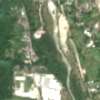
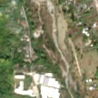

2,1 ha de pădure schimbată lângă Pucioasa-Sat
Între 4 septembrie 2026 și 16 septembrie 2026, pe aproximativ 2,1 ha de pădure din orașul Pucioasa, lângă Pucioasa-Sat, județul Dâmbovița, imaginile Sentinel-2 arată că vegetația a dispărut sau s-a schimbat puternic. Nu pare o tăiere de lemn.
Autorizația de tăiere
nu e tăiere de pădure
Schimbarea nu pare tăiere de lemn, așa că autorizațiile de tăiere nu se aplică. E o lucrare, nu o exploatare de lemn: drum, cale ferată, linie electrică, conductă, carieră sau șantier.
Ce se vede în poze: În poza detaliată zona marcată era acoperită de pădure deasă, lângă râul Ialomița. În «după» apar fâșii de teren desfăcut și urme liniare, iar o șosea este în construcție chiar aici, deci pare mai degrabă o lucrare decât o tăiere forestieră.


Înainte și după: Copernicus Sentinel-2, 10 m pe pixel, conturul zonei cu portocaliu. Poza detaliată (Esri World Imagery) e de acum 1–4 ani: arată ce era acolo înainte, nu tăierea.
Pe scurt
- Identificator
- 20260916_45062_25428
- Locul
- Pucioasa-Sat, orașul Pucioasa, județul Dâmbovița (SIRUTA 65921)
- Coordonate (centru)
- 45.06199, 25.42787 · Google Maps · OpenStreetMap
- Suprafața
- 2,1 ha (din pixeli de 10 m; ± câțiva pixeli pe margine)
- Ultima imagine cu pădurea întreagă
- 4 septembrie 2026
- Prima imagine cu schimbarea
- 16 septembrie 2026
- Imagini în care se vede schimbarea
- 6
- Cât de sigur e semnalul din satelit
- scăzută
- Autorizația cea mai apropiată
- APV 2500010503830 · Ocolul Silvic Pucioasa, valabilă 8 octombrie 2025 – 30 decembrie 2025, la 0 m de zonă
- Terenul
- pădure de stat, după amenajamentul silvic publicat
- Pădure pierdută în jur, alți ani
- 2017, 2025 (Hansen)
- Garda Forestieră
- Ploiești
Dacă vrei să verifici sau să sesizezi
- Pădurile din județul Dâmbovița sunt în grija Gărzii Forestiere Ploiești, care controlează tăierile și dă amenzile.
- Autorizația găsită în zonă e emisă de Ocolul Silvic Pucioasa.
- Formularul Gărzii Forestiere Naționale primește sesizări și fără nume. Trimite linkul acestei pagini, coordonatele și pozele. Dacă tăierea e în desfășurare, sună la 112.
- Autorizațiile și transporturile de lemn se pot căuta în Inspectorul Pădurii.
Pagina arată ce se vede din satelit și ce scrie în registrul public; nu e o dovadă în sine.
Cum citezi zona
Linkul acestei pagini nu se schimbă. Dacă zona iese vreodată de pe hartă, pagina rămâne, cu data și cu ce știam despre ea.
Pădurea RO, zona 20260916_45062_25428: 2,1 ha, Pucioasa-Sat, orașul Pucioasa, județul Dâmbovița; schimbare văzută din satelit între 4 septembrie 2026 și 16 septembrie 2026. https://iliemihai.github.io/padurea-ro/zona/20260916_45062_25428/ (consultat la [data]). Date: CC BY 4.0.
Datele zonei: GeoJSON · toate zonele: date deschise · licența CC BY 4.0.
Istoricul zonei pe hartă
Starea se poate schimba când registrul publică o autorizație sau când analistul vede poze mai bune. O ținem aici, ca un link citat să arate și ce spuneam atunci.
Pe hartă cel târziu din 5 noiembrie 2026.
- 5 noiembrie 2026 – azi · nu e tăiere de pădure
Detalii tehnice, pentru verificare
De ce acest nivel de încredere:
- văzută schimbată în 6 imagini diferite
- pădurea din jur e neschimbată
- AI-ul vede pădure dispărută
- văzută schimbată doar toamna, când și frunzele care se îngălbenesc pot arăta așa; o urmărim și primăvara
- în poze, zona se schimbă vizibil față de pădurea din jur
Ce a văzut analistul cu context: Zona este o fâșie lungă (428 × 115 m, elongație 3,7) pe coridorul râului, care continuă în afara conturului, cu piste liniare și sol deschis în imaginea «după», în timp ce pădurea din jur rămâne verde (nu e sezon). OSM indică un drum în construcție (trunk_link) la 0 m, iar registrul de tăieri dă «nu_taiere» deși există un APV suprapus 61%; nu se exclude însă o intervenție forestieră sau o modificare a albiei, de aici încrederea moderată.
- Placa Sentinel-2
- 35TLL
- NDVI de referință
- 0.84
- NBR de referință
- 0.58
- Scăderea în pădurea din jur
- 0.0
- Persistență
- 0.87
- NDVI / NBR după
- 0.408 / 0.149
- Analistul de zi (model)
- taiere · 0.8 · claude-haiku-5-5
- Analistul cu context (model)
- santier · 0.55
Cum se calculează fiecare: metodologia.
Pune harta zonei într-un articol
Copiază codul în articol (merge în majoritatea site-urilor de știri). Sau pune doar linkul: WhatsApp, Facebook și X arată singure poza zonei.